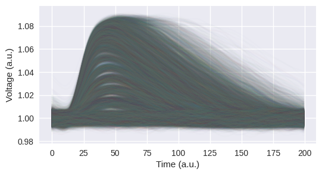
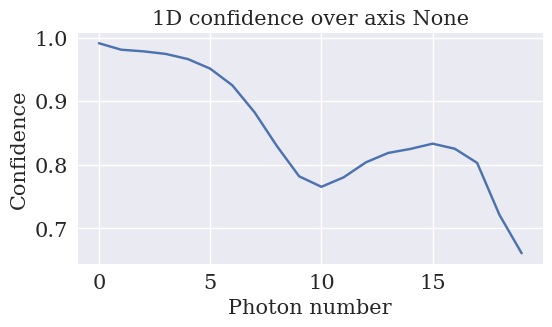
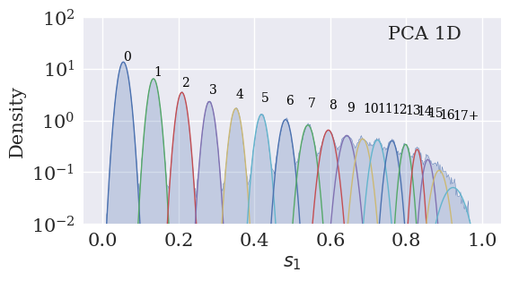
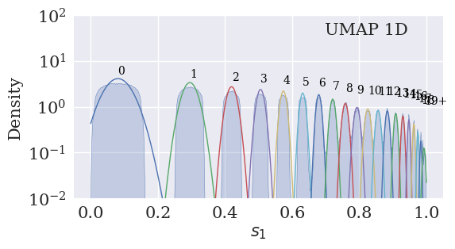
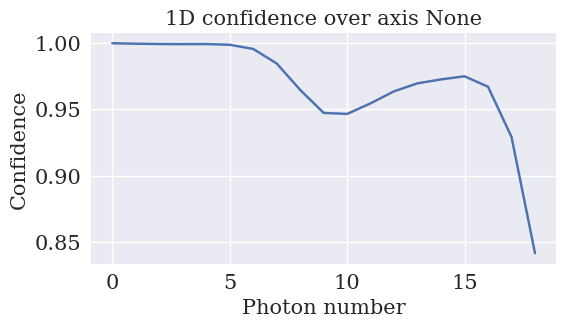

Large#
from src.Utils import save_results, get_means
from src.Dataset import dataset_csv
from src.ExistingAlgorithms import area, sklearn_available
from src.GaussianMixture import gaussian_mixture
import matplotlib.pyplot as plt
from src.Parametric_UMAP import load_pumap
from sklearn.decomposition import PCA
import torch
import umap
PATH_DATA = 'src/Dataset/Data_Ottawa/data.zip'
PATH_RESULTS = 'src/Results_Large'
PATH_SAVE_LD = 'src/Results_Large/Low Dimension'
PATH_SAVE_D = 'src/Results_Large/Density'
---------------------------------------------------------------------------
ModuleNotFoundError Traceback (most recent call last)
Cell In[1], line 1
----> 1 from src.Utils import save_results, get_means
2 from src.Dataset import dataset_csv
3 from src.ExistingAlgorithms import area, sklearn_available
ModuleNotFoundError: No module named 'src'
Load Data#
files_ = ['data/traces_attn_37dB.csv',
'data/traces_attn_33dB.csv',
'data/traces_attn_29dB.csv',
'data/traces_attn_25dB.csv',
'data/traces_attn_21dB.csv',
'data/traces_attn_17dB.csv']
data_train, data_test = dataset_csv(PATH_DATA, files=files_)
pca = PCA(n_components=1).fit(data_train)
data_train, data_test = dataset_csv(PATH_DATA)
data_test.shape
(550000, 200)
plt.plot(data_test[::30].T, linewidth=1, alpha=0.02)
plt.show()

AREA#
X_AREA = area(data_test+1, filtering = True, plot_filter = True, threshold = 0.01, critical_frequency = 0.1)

name_method = 'AREA'
gm = gaussian_mixture(X_AREA,
data_test,
number_cluster = 21,
cluster_iter = 3,
means_init = get_means(name_method, PATH_RESULTS),
tol = 1e-4,
info_sweep = 0,
plot_sweep = True)
gm.plot_density(bw_adjust = 0.03,
plot_gaussians = True,
text = name_method,
save_path = PATH_SAVE_D)

gm.plot_confidence_1d(expected_prob = None)
save_results(gm = gm, name_method = name_method, path = PATH_RESULTS)

Parametric UMAP#
data_test.shape
(550000, 200)
model = load_pumap('src/Parametric_UMAP/model 1D/modelLarge.ckpt').to('cpu')
X_PUMAP = model.encoder(torch.from_numpy(data_test).view(-1,200).to(dtype=torch.float)).detach().numpy()
/home/nicolasdc/anaconda3/envs/ML/lib/python3.12/site-packages/pytorch_lightning/utilities/parsing.py:208: Attribute 'encoder' is an instance of `nn.Module` and is already saved during checkpointing. It is recommended to ignore them using `self.save_hyperparameters(ignore=['encoder'])`.
name_method = 'PUMAP 1D'
gm = gaussian_mixture(X_PUMAP,
data_test,
number_cluster = 21,
cluster_iter = 5,
means_init = get_means(name_method, PATH_RESULTS),
tol = 1e-4,
info_sweep = 0,
plot_sweep = False,
latex = False)
gm.plot_density(bw_adjust = 0.01,
plot_gaussians = True,
text = name_method,
save_path = PATH_SAVE_D)

gm.plot_confidence_1d(expected_prob = None)
save_results(gm = gm, name_method = name_method, path = PATH_RESULTS)

PCA#
pca = PCA(n_components=1).fit(data_train)
X_PCA = pca.transform(data_test)
name_method = 'PCA 1D'
gm = gaussian_mixture(X_PCA,
data_test,
number_cluster = 18,
cluster_iter = 5,
means_init = get_means(name_method, PATH_RESULTS),
tol = 1e-6,
info_sweep = 0,
plot_sweep = False,
latex = False)
gm.plot_density(bw_adjust = 0.03,
plot_gaussians = True,
text = name_method,
save_path = PATH_SAVE_D)

# labels = np.bincount(gm.labels)
# n_arr = np.arange(labels.shape[0])
# with plt.style.context("seaborn-v0_8"):
# plt.figure(figsize=(6,3), dpi=100)
# plt.rcParams['font.family'] = 'DeJavu Serif'
# plt.rcParams['font.serif'] = ['Times New Roman']
# plt.bar(n_arr, labels / labels.sum(), label = 'Uniform', alpha=0.5)
# plt.ylabel('Probability')
# plt.xlabel('Photon number')
# plt.savefig('distribution.pdf', format='pdf', bbox_inches='tight')
# plt.show()
gm.plot_confidence_1d(expected_prob = None)
save_results(gm = gm, name_method = name_method, path = PATH_RESULTS)

UMAP#
X_l_UMAP = sklearn_available(data_train, data_test, PATH_SAVE_LD+'/umap1d', umap.UMAP, '100.npy', n_components=1, n_neighbors=100, random_state=42)
name_method = 'UMAP 1D'
gm = gaussian_mixture(
X_low = X_l_UMAP,
X_high = data_test,
number_cluster = 20,
cluster_iter = 5,
means_init = get_means(name_method, path = PATH_RESULTS),
tol = 1e-4
)
gm.plot_density(
bw_adjust = 0.03,
plot_gaussians = True,
text = name_method,
save_path = PATH_SAVE_D
)

gm.plot_confidence_1d(expected_prob = None)
save_results(
gm = gm,
name_method = name_method,
path = PATH_RESULTS
)
